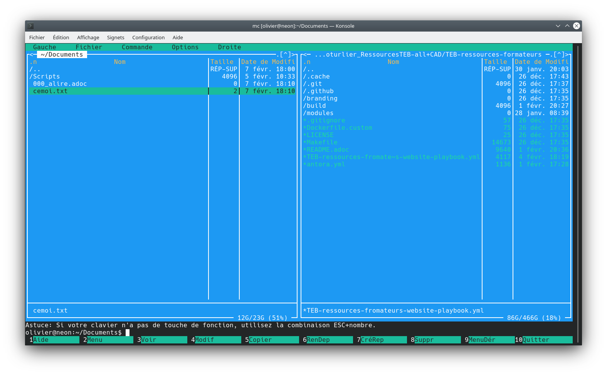

DoubleCommander
Double Commander est un explorateur de fichiers à double panneaux aux multiples fonctionnalités. L’installation de cet utilitaire permettra de bien meilleures capacités de visualisation, opérations sur les fichiers, etc.
L’usage de Double Commander mérite une période (courte) d’adaptation, réduite d’autant si la configuration a été bien faite auparavant… Ce genre d’explorateur de fichiers à double panneaux existe depuis fort longtemps, sur Windows nous avons Totalcommander, Nortoncommander … qui eux-mêmes imitent MidnightCommander qui est l’initiateur du principe de navigateur à double panneaux, un aperçu : 
Installation
-
se rendre sur le site web de Double Commander, un bref résumé des capacités (_en Shakespearien) vous y attend
-
cliquez sur l’onglet
download, vous atterrirez sur la page Sourceforge dédiée -
choisissez la version adaptée à votre système, pour du 64 bit normalement, peut importe que cela soit un
.exeou un.msi. Lors de l’écriture de ce tutoriel, c’est la versiondoublecmd-0.9.8.x86_64-win64.exequi semble adaptée à la plupart des configurations récentes -
version de Double Commander à télécharger sur (clic sur l’image ouvre un autre onglet)
-
cliquez pour télécharger
-
double-cliquez pour installer en suivant les instructions
Bonnes pratiques / Configuration
-
*affiche la liste des dossiers favoris et permet d’en créer de nouveaux -
\va au dossier "racine" (C:\) -
..va au dossier supérieur -
~va au dossier "personnel", du typeC:\Users\olivier\ -
<ou>affiche le même dossier que celui actif dans le panneau opposé
-
Ctrl+Entrée : ajouter le nom du fichier sélectionné dans la ligne de commande ← pratique si ce fichier est un exécutable (fichier
.batou.exe) -
Ctrl+T : nouvel onglet
-
Ctrl+W : fermer l’onglet
-
Ctrl+Tab : onglet suivant
-
F2 : renommer
-
F3 : voir fichier texte, sans l’ouvrir. On ferme la fenêtre par Echap
-
F4 : éditer directement le fichier texte, soit avec l’éditeur intégré, soit avec l’éditeur de votre choix si vous l’avez configuré. Dans ce cas, choisissez un éditeur au lancement rapide, comme NotePad++
-
F5 : copier vers l’autre panneau (= Ctrl+C Ctrl+V) du panneau actif vers l’autre
-
Maj+F5 : copie dans le même panneau
-
F6 : déplacer (= Ctrl+X Ctrl+V) du panneau actif vers l’autre
-
F7 : nouveau dossier
-
Alt+F7 : chercher (par nom de fichier ou dossier ou recherche en plein texte)
-
F8 : supprimer en envoyant dans la corbeille
-
F9 : ouvrir un terminal dans le répertoire spécifié, équivalent d’écrire
cmddans la barre d’adresse de l’explorateur Windows, mais plus pratique… -
Ctrl+M : renommer par lots
-
Alt+F5 : compresser les fichiers
-
Ctrl+U : permuter les panneaux
-
Alt+Z : panneau cible = panneau source, équivalent à cliquer sur le "caret"
<ou>du bandeau supérieur
-
autoriser une seule instance de Double Commander à la fois
-
Sauvegardez la configuration
-
Main window state
-
Folder tabs
-
Afficher l’étiquette avec l’espace libre
-
Afficher l’étiquette d’espace libre restant
-
Afficher l’espace disponible sur l’étiquette des volumes/disques
-
Afficher la fenêtre de terminal
-
interne ou
-
externe (best = NotePad++), il faut aller dans et indiquer le chemin de l’exécutable de Notepad++ (C:\Program Files\Notepad++\notepad++.exe)